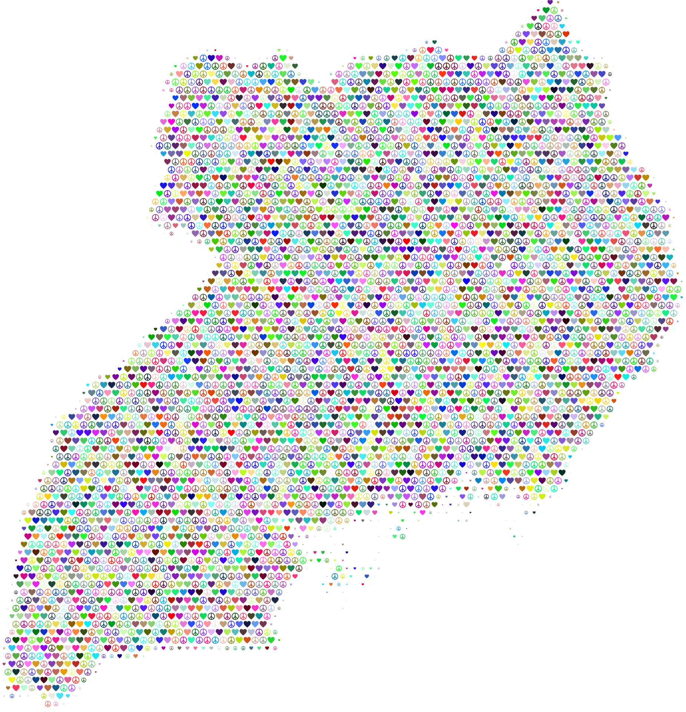

UGANDA COUNTRY SPOTLIGHT
Improving quality, access and equity in Uganda’s health, education, and social protection systems for vulnerable communities
 Buddu Coffee
Buddu Coffee
THE CHALLENGE WE'RE ADDRESSING
Over the last 10 years, Uganda’s government has made strides in advancing access to healthcare, education, and social protection for vulnerable communities by supporting community‑based organizations and promoting integrated service delivery. Over 80% of Uganda’s vulnerable children, youth, women, and elderly people rely on community health centers, schools, and social welfare services as their primary source of support.
However, poor health outcomes, low school retention, and gaps in child protection remain amongst the highest in the region, driven by a twin challenge affecting the majority of vulnerable families: delays in accessing timely health and education information, and gaps in service delivery, quality management, and referral systems.

Our Partnerships
Since 2020, EKFcharity has partnered with district local governments, community‑based organizations, social workers, and vulnerable communities to improve health outcomes, education access, child protection, and quality of life for vulnerable families, where the majority of Uganda’s underserved children, youth, women, and elderly people live and rely on support services.
We partner with the Ministries of Health, Education, and Gender, along with district governments in 22 of Uganda’s most vulnerable districts, who co‑own our interventions and work with us to design what and how we measure impact for effective decision‑making. These partnerships have helped us reach over 20,000 vulnerable people with our solutions across 500+ community groups, schools, and health centers, and will continue to be the cornerstone of how we approach the path to national scale in Uganda.
Our vision of an “end game” at scale is our district government partners and community organizations leading and sustainably financing cost‑effective innovations within Uganda’s health, education, and social protection systems.
We support district governments and community groups to co‑own and co‑finance our solutions (GROW, FIELDS, PULSE), as a pathway to long‑term sustainability. Over the last several years, EKFcharity has earned increasing government recognition and buy‑in by proving its solutions can deliver impact on national priorities – such as healthcare access, school retention, child protection, and food security – and by routinely sharing data that helps them do more with their resources.Affordable fo Governments
Ugandan district governments cover 15% of the costs for the FIELDS training program (targeting 50% by 2027).
Endorsed governments
EKFcharity’s model of work has been endorsed by the Ministries of Health, Education, and Gender at the national level.
Supported by government Budgets
EKFcharity’s accredited training modules on child protection, psychosocial support, HIV/AIDS sensitization, and emergency response have been incorporated into the National Community Volunteer and Social Worker Training Curricula.

Snapshot of Scale and Impact
WHERE WE WORK
We have Ugandan roots and global ambitions
GROW - Since 2015, EKFcharity has worked with district local governments and the national Ministries of Health, Education, and Gender to improve health outcomes, school enrollment, child protection, and livelihoods for vulnerable families in Uganda’s most underserved regions. Guided by a mission to reach every vulnerable child, youth, woman, and elderly person, our focus is on scaling further within Uganda while adapting our model and capitalizing on our learnings to serve marginalized communities in new geographies. We currently partner with district governments in Central, Eastern, and Western Uganda to test and adapt our solutions to support national development priorities, with ambitious plans to grow our footprint across East Africa in the coming years.

A Story That Keeps Us Going
From Lost Hope To Brighter Future
Let me share with you the story of Esther (name changed for her protection). She is a 14‑year‑old girl living in a small village in Wakiso district. When we met her, she had dropped out of school after her mother died and her father abandoned the family. She was caring for her two younger siblings, often going to bed hungry. Our team came alongside her – providing school fees and scholastic materials, enrolling her in our child protection committee, and connecting the family to a local savings group that now helps them afford food and basic needs.
Today, Esther is back in school, and her siblings are in good health. She told me, “I now know that God has not forgotten us.”
This is just one of hundreds of lives touched through our work.
Impact Reports
You can find our quarterly and annual impact reports below, or sign up to receive these straight into your inbox.